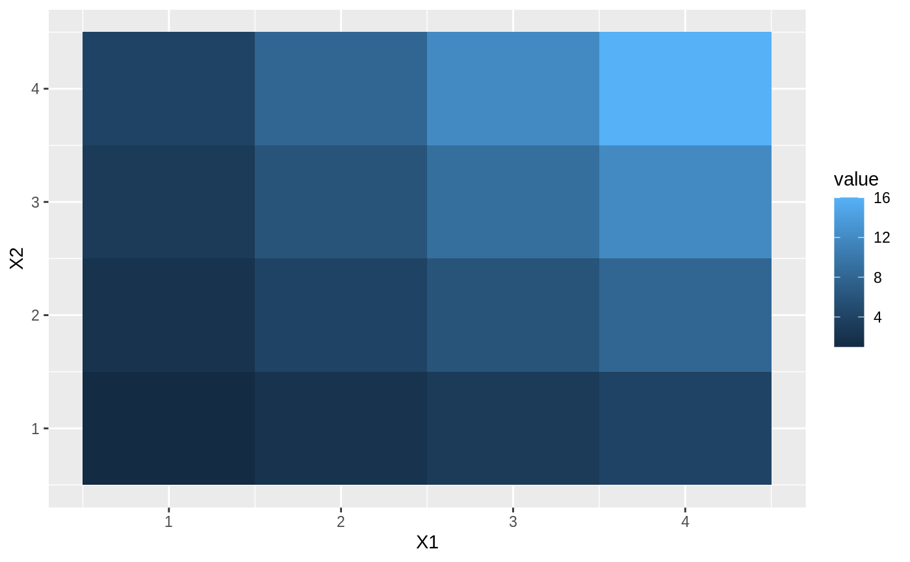
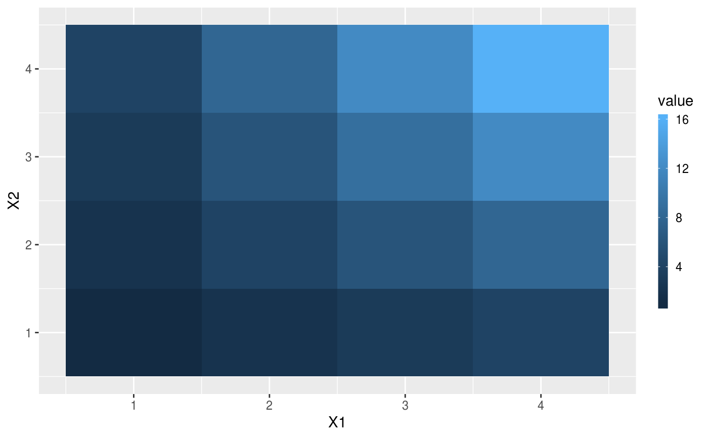
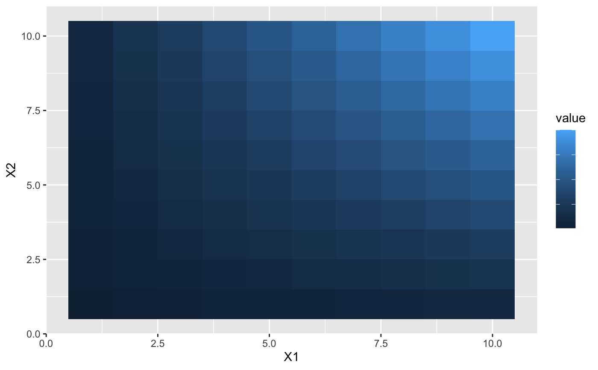
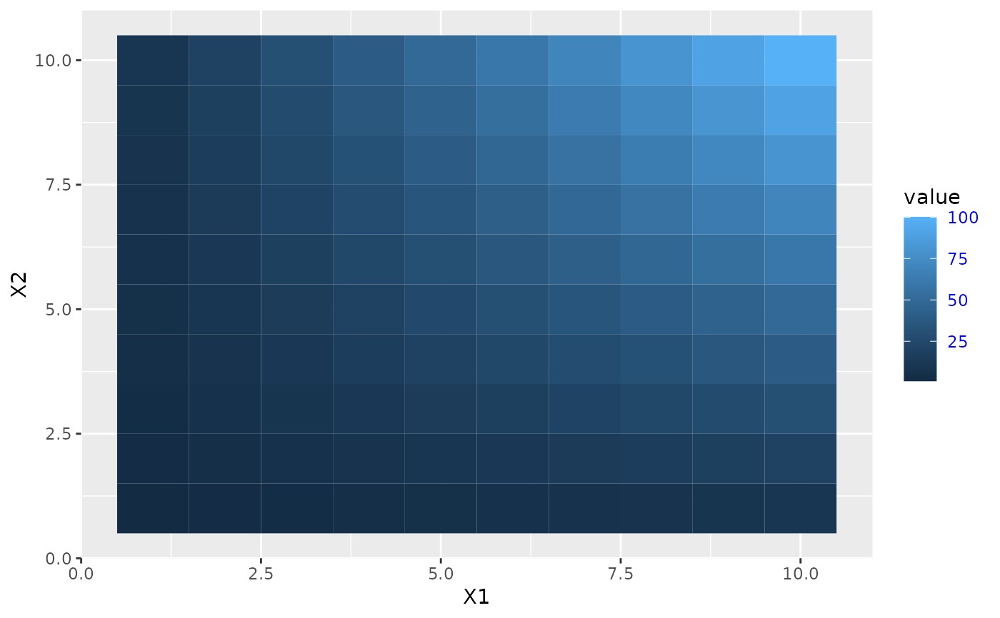
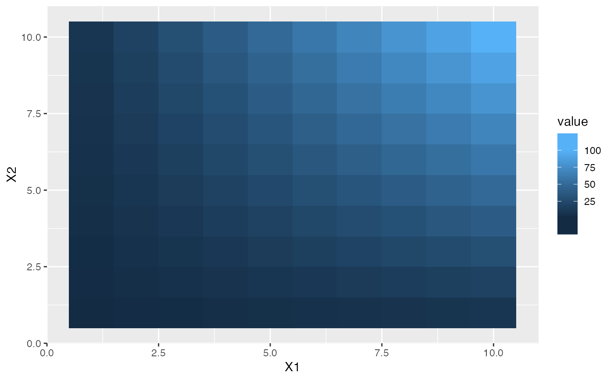
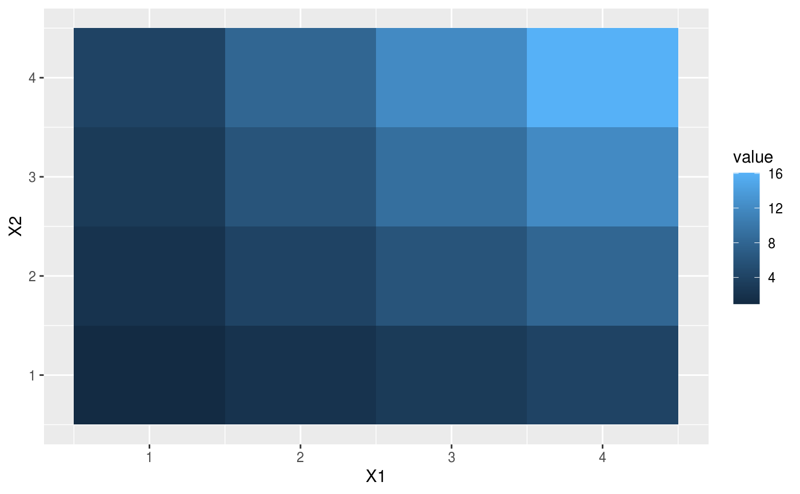
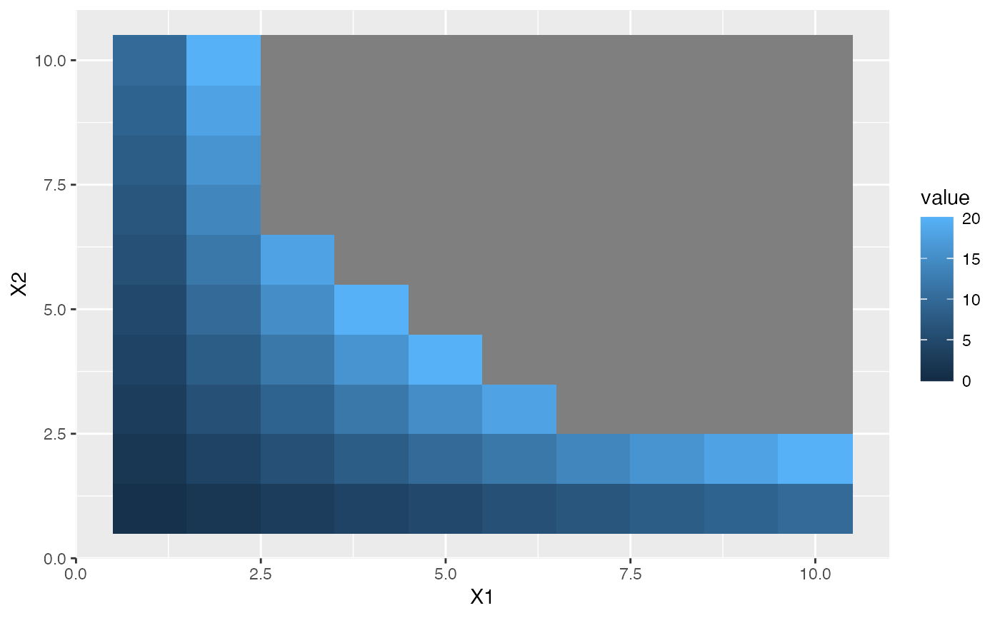
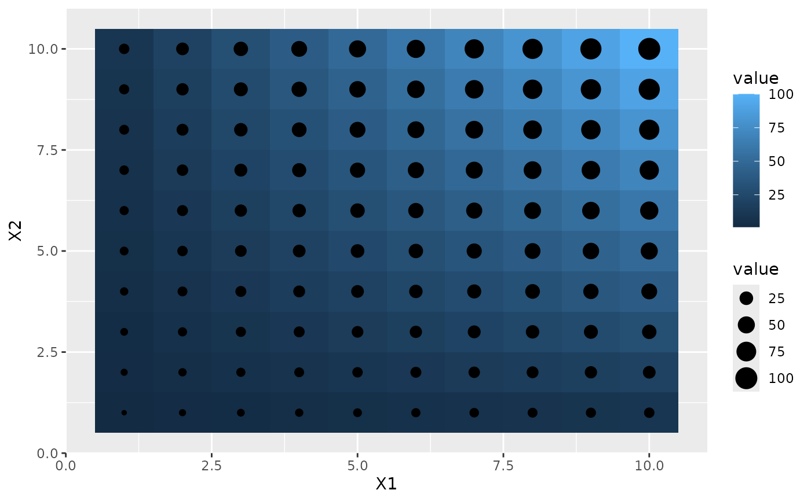
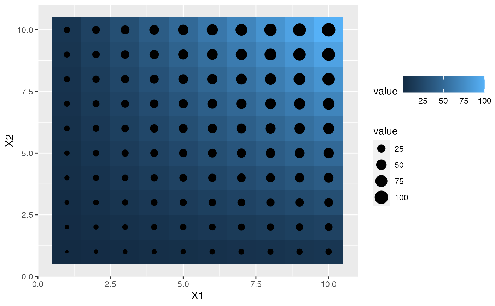

Colour bar guide shows continuous colour scales mapped onto values.
Colour bar is available with scale_fill and scale_colour.
For more information, see the inspiration for this function:
Matlab's colorbar function.
guide_colourbar( title = waiver(), title.position = NULL, title.theme = NULL, title.hjust = NULL, title.vjust = NULL, label = TRUE, label.position = NULL, label.theme = NULL, label.hjust = NULL, label.vjust = NULL, barwidth = NULL, barheight = NULL, nbin = 300, raster = TRUE, frame.colour = NULL, frame.linewidth = 0.5, frame.linetype = 1, ticks = TRUE, ticks.colour = "white", ticks.linewidth = 0.5, draw.ulim = TRUE, draw.llim = TRUE, direction = NULL, default.unit = "line", reverse = FALSE, order = 0, available_aes = c("colour", "color", "fill"), ... ) guide_colorbar( title = waiver(), title.position = NULL, title.theme = NULL, title.hjust = NULL, title.vjust = NULL, label = TRUE, label.position = NULL, label.theme = NULL, label.hjust = NULL, label.vjust = NULL, barwidth = NULL, barheight = NULL, nbin = 300, raster = TRUE, frame.colour = NULL, frame.linewidth = 0.5, frame.linetype = 1, ticks = TRUE, ticks.colour = "white", ticks.linewidth = 0.5, draw.ulim = TRUE, draw.llim = TRUE, direction = NULL, default.unit = "line", reverse = FALSE, order = 0, available_aes = c("colour", "color", "fill"), ... )
Arguments
| title | A character string or expression indicating a title of guide.
If |
|---|---|
| title.position | A character string indicating the position of a title. One of "top" (default for a vertical guide), "bottom", "left" (default for a horizontal guide), or "right." |
| title.theme | A theme object for rendering the title text. Usually the
object of |
| title.hjust | A number specifying horizontal justification of the title text. |
| title.vjust | A number specifying vertical justification of the title text. |
| label | logical. If |
| label.position | A character string indicating the position of a label. One of "top", "bottom" (default for horizontal guide), "left", or "right" (default for vertical guide). |
| label.theme | A theme object for rendering the label text. Usually the
object of |
| label.hjust | A numeric specifying horizontal justification of the label text. |
| label.vjust | A numeric specifying vertical justification of the label text. |
| barwidth | A numeric or a |
| barheight | A numeric or a |
| nbin | A numeric specifying the number of bins for drawing the colourbar. A smoother colourbar results from a larger value. |
| raster | A logical. If |
| frame.colour | A string specifying the colour of the frame
drawn around the bar. If |
| frame.linewidth | A numeric specifying the width of the frame drawn around the bar. |
| frame.linetype | A numeric specifying the linetype of the frame drawn around the bar. |
| ticks | A logical specifying if tick marks on the colourbar should be visible. |
| ticks.colour | A string specifying the colour of the tick marks. |
| ticks.linewidth | A numeric specifying the width of the tick marks. |
| draw.ulim | A logical specifying if the upper limit tick marks should be visible. |
| draw.llim | A logical specifying if the lower limit tick marks should be visible. |
| direction | A character string indicating the direction of the guide. One of "horizontal" or "vertical." |
| default.unit | A character string indicating |
| reverse | logical. If |
| order | positive integer less than 99 that specifies the order of this guide among multiple guides. This controls the order in which multiple guides are displayed, not the contents of the guide itself. If 0 (default), the order is determined by a secret algorithm. |
| available_aes | A vector of character strings listing the aesthetics for which a colourbar can be drawn. |
| ... | ignored. |
Value
A guide object
Details
Guides can be specified in each scale_* or in guides().
guide="legend" in scale_* is syntactic sugar for
guide=guide_legend() (e.g. scale_colour_manual(guide = "legend")).
As for how to specify the guide for each scale in more detail,
see guides().
See also
Other guides:
guide_bins(),
guide_coloursteps(),
guide_legend(),
guides()
Examples
df <- expand.grid(X1 = 1:10, X2 = 1:10) df$value <- df$X1 * df$X2 p1 <- ggplot(df, aes(X1, X2)) + geom_tile(aes(fill = value)) p2 <- p1 + geom_point(aes(size = value)) # Basic form p1 + scale_fill_continuous(guide = "colourbar")# label theme p1 + guides(fill = guide_colourbar(label.theme = element_text(colour = "blue", angle = 0)))# make top- and bottom-most ticks invisible p1 + scale_fill_continuous( limits = c(0,20), breaks = c(0, 5, 10, 15, 20), guide = guide_colourbar(nbin = 100, draw.ulim = FALSE, draw.llim = FALSE) )# guides can be controlled independently p2 + scale_fill_continuous(guide = "colourbar") + scale_size(guide = "legend")p2 + scale_fill_continuous(guide = guide_colourbar(direction = "horizontal")) + scale_size(guide = guide_legend(direction = "vertical"))